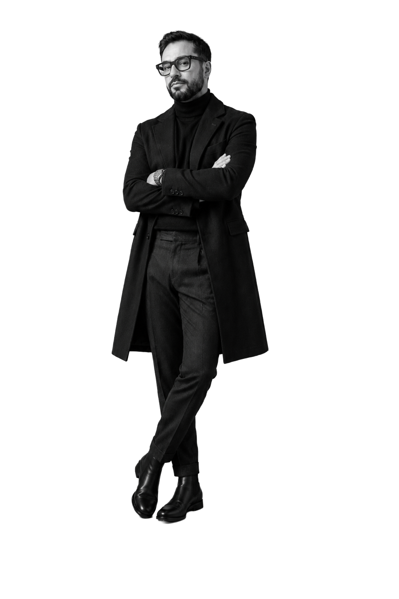
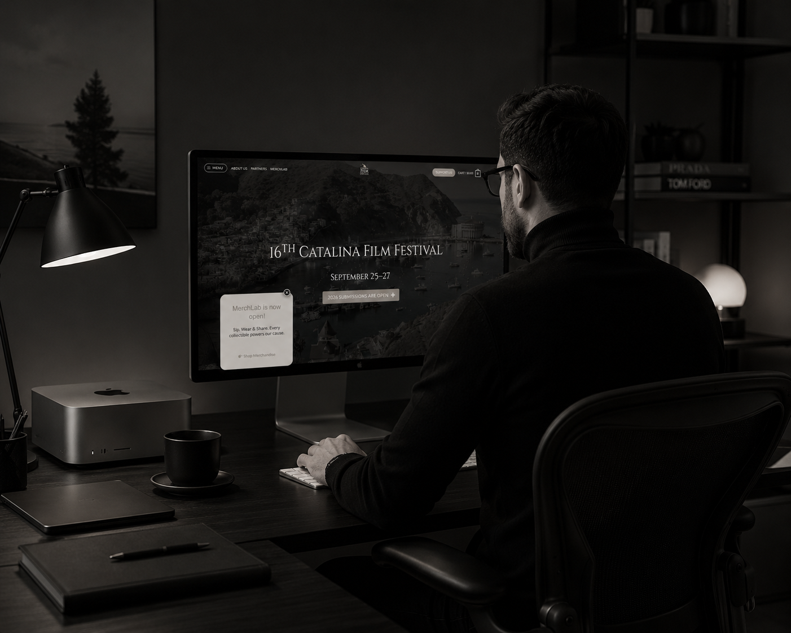

AFA
Asia for Animals: donation focused digital platform
A visually arresting and culturally fluent platform designed to clarify the coalition’s mission, simplify navigation and support donor action.
Digital direction and research led design
I build and direct digital work across UI and UX, code, visual systems, editorial projects and psychology informed analysis.
The practice is built around four connected capabilities: UI and UX, computing, design systems and psychology informed judgement.

Practice framework
I do not separate design from implementation or research from delivery. Each engagement is shaped through four capabilities that turn complexity into a clear digital outcome.
Mission clarity, journey architecture and design system thinking for organisations with complex audiences.
Lean front end systems, responsive interfaces and build structures designed for control, speed and maintainability.
Typography, hierarchy, imagery and interface rules that make organisations feel coherent, premium and credible.
Analysis of attention, audience interpretation and animation evaluation used to make digital decisions more precise.

Working environment
The work is practical: testing structure, reading the interface as a user, refining content routes and reducing the number of things that can distract or break.
Professional identity
The site now reflects the work more accurately: digital products, editorial systems, festival projects, animation evaluation and a research baseline on attention and media design.
I judge scripts and animated films for Catalina Film Festival, reading story, rhythm, visual craft, audience clarity and emotional coherence as evaluative systems.
My research baseline studies how audiovisual stimulation, platform expectations, viewing context and genre shape children’s attention.
The Catalina work now includes a new full code website build, extending the project from visual direction into technical ownership.
Featured work
AFA demonstrates UI/UX, no code development, user journey mapping and design systems. Catalina demonstrates creative direction, design systems, mobile UX, a full code rebuild, an editorial magazine and verified traffic recovery.
A visually arresting and culturally fluent platform designed to clarify the coalition’s mission, simplify navigation and support donor action.
A cinematic digital direction combining verified traffic recovery, a new full code website build and a premium editorial magazine.
Working style
The work uses visual identity, systems thinking and psychological judgement to reduce friction and make digital experiences more persuasive.
Contact
Contact me for UI/UX, digital direction, web systems, creative site concepts, professional identity or psychology informed analysis.
samuelelai@laidesign.studio